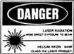

LABORATORY FOR
SCIENCE
2821 9th Street
Berkeley, CA 94710
Tel (510) 644-0224
MODEL 220
ULTRA-STABLE LASER
General Performance:
The Model 220 has the highest short and long term frequency stability of the 200 Series lasers, and indeed the highest frequency stability of any commercially available HeNe laser system. Under typical laboratory conditions, and with no retroreflections, beat frequency fluctuations between two identical units, when averaged over a one second interval, rarely exceed 5 kHz rms. Drifts are usually less than 20 kHz/hr and 100 kHz/day. [See Fig. 1]. The Model 220 is also the most versatile in its potential range of applications and in its precision of control. The output frequency of this laser can be very precisely controlled over a range of some 125 MHz either side of line center by means of either the digital switches in its frequency synthesizer or by an external reference frequency source connected into the Mode Options Plug. Frequency scanning can also be obtained by injecting into this same plug a suitable ramp or a manual control voltage from an external source. When set to operate at line center, and there is a fairly simple technique to accomplish this, this type of laser provides a reference frequency without dithering that is accurately known to within a few parts in 108 over the lifetime of the plasma tube. It should be noted that, while the frequency stability of this type of laser is particularly sensitive to the problem of retroreflection when used in the single frequency polarized mode, it is particularly insensitive to this problem when used in the dual frequency mode with an external polarizer adjusted to the correct 45° angle. Like other models of the 200 Series, the Model 220 provides for self monitoring of retroreflection and other potential frequency-destabilizing variables.
Theory of Operation:
The Model 220 is classified as a transverse Zeeman laser. In this type of laser a particular magnetic field is applied transversely to the plasma tube in order to degenerate the axial modes, on parallel and the other perpendicular to the magnetic field. These two modes will have a small frequency difference, typically 100-500 kHz, that depends on the birefringence of the mirror system and the magnetically induced birefringence of the gas discharge (Voigt effect). The latter is in turn a function of the point of operation within the Doppler gain profile. Morris et al [1] were the first to investigate the optimum conditions for this mode degeneration and the production of the associated beat frequency, and by the addition of a frequency-to-voltage converter in a closed loop servo system, they were able to stabilize the operating frequency to such a Zeeman laser.
The control system of the Laboratory for Science Model 220 departs in its logical architecture [2] from the scheme of Morris and others [3-6] who have worked in this field. In the Model 220, the Zeeman beat frequency (tubes are preselected for 100-500 kHz) is very tightly phase locked to the frequency of a crystal-controlled frequency synthesizer. The attainment of this very tight phase lock along with the precise regulation [7] of the temperature of the output mirror lead to the extraordinary degree of short and long term frequency stability achieved with the Model 220. In addition, the use of a digital control system greatly enhances the ease and range of applications to which this laser may be applied.
The Model 200 Series lasers, like virtually all other stabilized HeNe laser systems, are self-referencing in that they depend on an internally generated comparison of amplitudes or frequencies. In general retroreflection affects only one of the components used for the comparison. The effect of both the phase and amplitude of any retroreflected beam must be taken into account in determining the effect of such a beam on the performance of the servo system. When the output beam of the Model 220 has been vertically polarized so that retroreflection can affect only the vertical component of the beam, such a retroreflection has the effect, depending on its phase and amplitude, of altering the birefringence of the mirror system and consequently the beat frequency. Such changes in the beat away from the reference frequency to which it is normally phase-locked immediately activate the servo system to alter the frequency of the laser in the direction that restores the beat frequency to the reference value.
Design Features:
Headphones: In most stabilized laser systems, retroreflected signals often play a significant if not dominant role in the performance of the servo system and the frequency and amplitude stability that can be obtained. An awareness of the retroreflection and back-scattering and ways to reduce it are highly desirable. The headphones supplied with each Model 220 form an important design feature, for they enable the operator to listen in on the output of the servo control system and thus evaluate the problem of retroreflection and back-scattering. The headphonse are used to detect any Doppler shifted back-scattered radiation when a jiggling force is intentionally applied to an optical element (most objects can easily be moved one or more wavelengths by finger pressure). The amplitude of the resultant beat frequency signal heard in the headphones is qualitatively indicative of the back-scattering from the element in question. Retroreflected power levels as small as 1 part in 1011 of the outgoing beam power are detectable. The headphones also reveal the high sensitivity of the plasma tubes to vibration and acoustic noise, and in general will be found to be very useful in obtaining the highest possible frequency stability in any given experimental system.
Frequency Synthesizer: The frequency synthesizer in the Model 220 provides a three decade modulus determined by digital switches on the side of the Power Control Unit. With additional preset binary stages to allow for variability in different plasma tubes, line center modulus numbers vary from 400-800, and the full 250 MHz frequency output range will require a modulus number change of 200-400. A change of one unit in the final digit of the modulus number will typically change the output frequency of the output frequency of laser by 0.5 to 1 MHz. (Changes of any kind in the modulus number resultin completely reproducible changes in the laser output frequency). Since the programmable dividers used in the synthesizer circuitry use enable gating, remote programming of the modulus can be accomplished with an appropriate extension cable. For such finer frequency control, we recommend the Stanford Research Systems Synthesized Function Generator [8] as a reference frequency source introduced via the Mode Options Plug.
Mode Options Plug: Through this plug, which is located on the underside of the Power control Unit, are routed all signals of any importance in the phase locking architecture of the servo control system. The accessibility of this plug of input and output ports greatly facilitates non-standard modes of operation: use of an external reference frequency source, frequency modulation (via frequency modulation of the reference frequency), operation of the Model 220 in phase locked offset frequency applications (although such applications are far better served by the Model 240). If operational mode changes are to be made fairly frequently, the Model 222 Programming Interface Module will be found a convenient accessory.
Modulation Null Control: In the transverse Zeeman laser, there is not only a certain amount of coupling between the two orthogonally polarized mode populations, but there are more subtle mode pulling effects that are a function of the orientation of the birefringence axes with respect to the magnetic field and the point of operation within the Doppler gain profile. As a result, unless the birefringence axes are very precisely oriented, a given polarized mode will exhibit considerable modulation at the Zeeman beat frequency. The Model 220 has a fine adjustment screw on the top rear part of the case to allow this modulation to be minimized. When the screw is properly adjusted, residual amplitude modulation can be reduced below 1%, and it will be all at the second harmonic of the beat frequency.
Application Hints:
The Model 220 is well suited to a wide range of applications by virtue of its dual frequency output beam and its remarkable short and long term frequency stability. Even without the interposition of any polarizer, the coherent length of the output beam is typically more than 200 meters, and ten times that when the is polarized. This performance along with the fact that there is no dithering of the output beam make the Model 220 unequaled not only for very long distance interferometry [9] but also for fractional order interferometry [6]. The Model 220 is an excellent reference source for active stabilization of Fabry-Perot etalons or other cavities. (Applications have ranged from high precision interferometers used in astronomy, to reference controls for the resonant cavities of high power lasers, diamond turning machines, and engines for ruling large diffraction gratings.) In addition, when set to operate at the center of the Zeeman beat frequency range, which corresponds very closely to the Ne20 line center, the Model 220 can serve as a known frequency standard.
In many applications the control of retroreflection is particularly important because it is nearly always much larger than expected, and can become extreme, if for example, the output beam is to be directed at an etalon or focussed down an optical fiber. Wile, as described below, it is always possible to eliminate the problem of retroreflection in a given system employing the Model 220, it is obviously better to start out with an optical design configured to reduce the problem of retroreflection and back-scattering to an absolute minimum. Interferometers of the Mach-Sender type or any of the corner cube variants [10-13] of the Michelson type are much to be preferred because the interfering beams cannot retrace their paths back to the laser except by reflection or back-scattering from the detector. (Problems here can be solved by tilting the focusing lens and the PIN detector by at least half the convergence angle of that lens.)
While the Model 220 is particularly sensitive to retroreflection when vertically or horizontally polarized, ti is very insensitive when used with a polarizer set at a very sharply defined angle that is very close to 45°. This insensitivity is of great value where the beam is used as a reference on which to lock an external cavity or etalon. In such applications a properly oriented 1/4-waveplate is used in addition to the polarizer to minimize the amount of light getting back into the laser. The critical polarizer angle is easily determined by temporarily interposing a piece of white paper by hand (for some motion) in the beam after the polarizer and rotating the latter until the minimum sound is heard in the headphones. With the 45° polarizer the output beam to a servo controlling an external cavity will be almost 100% modulated at the Zeeman beat frequency but such modulation is easily integrated out oat the detector for the servo system locking the external cavity, and the precision of the usual half-intensity lock will be unaffected. Where it is applicable, the use of this passive 45° technique provides far greater suppression of retroreflection than could be obtained with the use of a polarizer and 1/4-waveplate set to just pass one of the polarized components of the Model 220 output beam.
When a single frequency beam with minimum modulation is desired in the presence of considerable back-scattering and retroreflection, both the polarizer/1/4-waveplate technique or a Faraday isolator may not provide sufficient isolation. A less well known technique for isolating a laser from its retroreflection, and one that is particularly effective with the Model 200 series lasers, we call frequency shift isolation (FSI). At lower cost, this technique provides a much higher degree of isolation, and it is the only technique we recommend if the beam from a Model 200 is to be directed down an optical fiber. (Retroreflection problems are particularly difficult in the case of an optical fiber, not only as a result of scattered light from the condensing objective, but also because there will be a 4% reflection from the ends of the fiber that will be focussed directly back into the laser.) With FSI the unpolarized output from the Model 220 is first directed at the Bragg angle (typ. 10 mr) to an acousto-optic modulator (AOM) several feet away. Most of the beam energy will be diffracted at twice the Bragg angle into the first order spot, and the frequency of the output beam will be shifted up or down in frequency, depending on the direction of the acoustic wave, by an amount equal to the acoustic frequency. A retroreflected beam directed back through the AOM and into the laser suffers a frequency shift equal to twice the acoustic frequency, and it thereby falls substantially outside the narrow resonant passband of the laser cavity. Such a frequency shifted retroreflection not only leaves the lasing action completely unaffected, but also it has virtually no effect on the servo system signal since the detectors for this signal are located at the back end of the laser tube for the Model 220 laser and does not respond to the very high beat frequency generated by any residual retroreflected light that does get through the laser cavity. Neither the amplitude nor the phase of any retroreflection now play any part in the response of the servo system. There is however typically about 10% of the power incident on the AOM that does not get deflected and is not frequency shifted. To eliminate this beam as a source of retroreflection problems, it is necessary to skim it off and totally absorb it without back-scattering. For this purpose we recommend one of our Model 211 Black Etalons placed a foot or so beyond the AOM. The remaining first order beam can be polarized for single frequency operation and then used as desired without concern over retroreflection problems.
Warranty:
The Model 220 Ultra-Stable Laser is protected, except for incidental or consequential loss, by a two year warranty. All mechanical, electronic, and optical parts and assemblies, including plasma tubes, are unconditionally warranted to be free of defects of workmanship and materials for the first two years following delivery.
Laser Safety:
 BRH warning logotypes, similar to that shown on the left, appear on each laser to indicate the BRH classification and to certify that the Output power Of the laser will not exceed the power level printed on the logotype.
* * * * * * * * * * * * * * * © 1992 Laboratory for Science |
|
|
|
|

References:
1. R. H. Morris, J. B. Ferguson, and S. J. Warniak, Appl. Opt. 14, 2808 (1975).
2. U.S. Patent No. 4,468,773, Foreign Patents Pending.
3. S. Donati, J. Appl. Phys. 49, 495 (1978).
4. N. Umeda, M. Tsukiji, and H. Takasaki, Appl. Opt. 19, 442 (1980).
5. N. Umeda and M. Tsukiji, Appl. Opt. 723 (1981).
6. N. Brown, Appl. Opt. 20, 3711 (1981).
7. U.S. Patent No. 4,730,323.
8. Stanford Research Systems, Sunnyvale, CA 94809.
9. K. Tanaka and T. Kurosawa, Japan, J. Appl. Phys., 15, 2271 (1976).
10. E.R. Peck and S.W. Obetz, J. Opt. Soc. Am. 43, 505 (1953).
11. W.R.C. Rowley, I.E.E.E. Trans. Instrum. MEas. I.M. 15, 146 (1966).
12. J.L. Hall and S.A. Lee, Appl. Phys. Lett, 29, 387 (1976).
13. F.V. Kowalski, R.E. Teets, W. Demtroder, and A.L. Schawlow, J. Opt. Soc. Am. 68, 1611 (1978)
ULTRA-STABLE LASER
MODEL 220
Specifications: |
|
| Frequency of emitted light (THz) | 473.612200* |
| Frequency control range (MHz) | ±125 |
| Spatial mode structure | TEM_00 |
| Beam diameter <1/e2> (mm) | 0.75 |
| Beam divergence angle (mrad) | 1.1 |
| Method of stabilization | Transverse Zeeman beat phase-locked to xtal |
| Unpolarized axial mode structure | dual frequency |
| Axial mode spacing (kHz) | 100-500 |
| Total power output (mW) | 3.0 |
| Amplitude noise (% rms): | |
| 10 Hz - 100 kHz | < 0.05 |
| 1 - 2 MHZ | < 0.1 |
| Polarized axial mode structure | single frequency |
| Power output (mW, w/cube polarizer) | 1.5 |
| Amplitude noise (% rms): | < 0.005 |
| 10 Hz - 100 kHz: | < 0.05 |
| 1 - 2 MHz: | < 0.1 |
| Amplitude modulation (% rms): | <1 |
| Frequency of ampl. mod. (kHz): | 200 - 1000 |
| Frequency stability (kHz): | |
| 1 sec | 5 |
| 1 min | 10 |
| 1 hour | 25 |
| 1 day | 100 |
| Warm-up time (min): | |
| for stable operation | 30 |
| for rated specifications | 90 |
| Laser head operating temperature (°C) | 40 |
| Environmental temperature range (°C): | |
| for normal operation | 22 ± 5 |
| for limited stability (± 1 °C) | 5 - 17, 27 - 33 |
| for storage | 5 - 45 |
| HN-32 Polarizer (T=0.7) | Yes |
| Cube polarizer option | Yes |
| Plasma tube options | No |
| Accessories available | Yes |
| Laser head dimensions (in/cm) | 3x3x12/7.5x7.5x32 |
| Laser head weight (Ib/kg) | 6.5/3 |
| Power control unit dimensions (in/cm) | 6x3x7.5/15x7.5x19 |
| Power control weight (Ib/kg) | 5.5/2.5 |
| Operating voltage (V) | 115 or 230 (spec.) |
| Power consumption (W) | 55 |
| B.R.H. Class IIIa compliance | Yes |
| Accessories included | Headphones |
| ----------------------------- | |
| * Final zero not significant. |
Copyright. 1992
LABORATORY FOR SCIENCE
2821 9th Street
Berkeley, CA. 94710
(510) 644-0224
Superior performance through research and design.